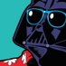
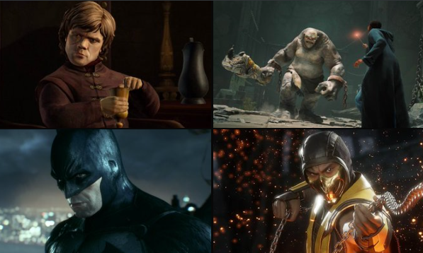
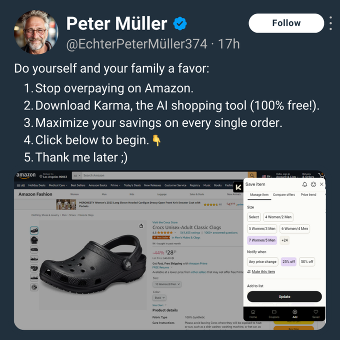
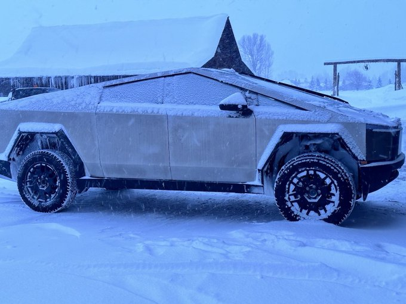
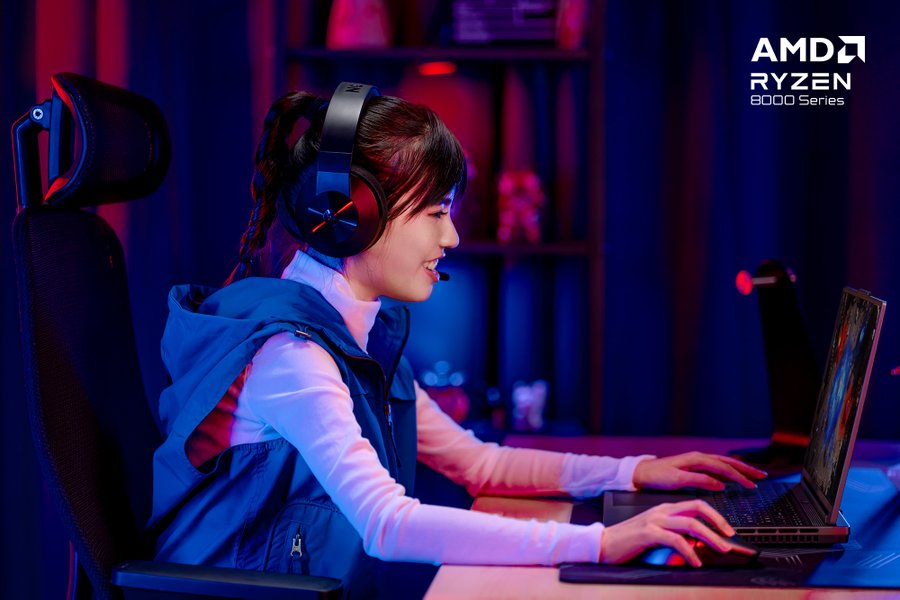
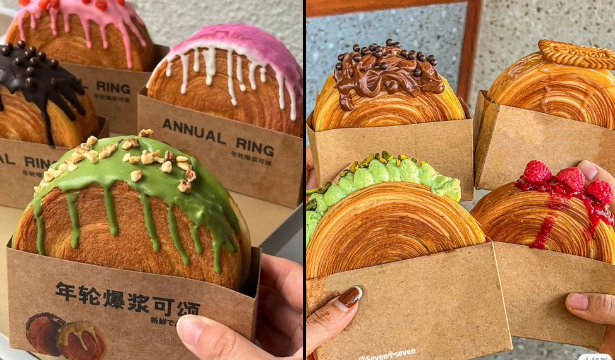

For you
Following
settings
public Everyone can reply
image
gif_box
ballot
sentiment_satisfied
calendar_clock
edit_location

Warner Bros Games plans to focus more on their core franchises 🎮

Don't overpay on Amazon again! You're welcome.


Cybertruck on Hoth

Auroraa's discovery of Dota 2 intricacies sparked her desire to compete.

the swiss roll croissants
